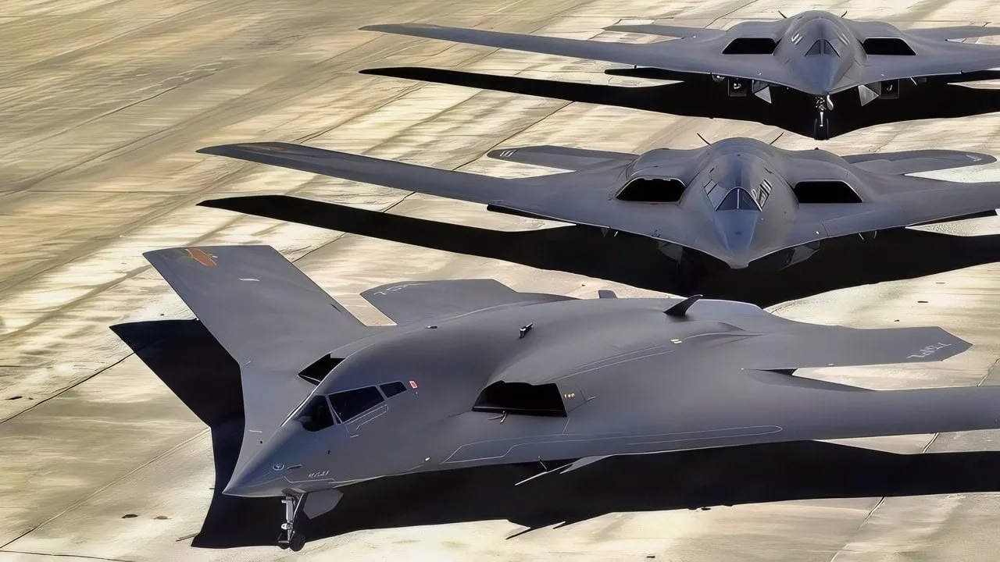

China’s New H-20 Strategic Stealth Bomber Has 1 Flaw That Might Not Be Easy to Fix


As we delve into the latest developments in the world of military aviation, our attention turns to China's highly anticipated H-20 strategic stealth bomber. This cutting-edge aircraft is expected to play a crucial role in the People's Liberation Army Air Force's (PLAAF) long-range strike capability, boasting an impressive range of 8500 km to 10000 km. However, despite its promising features, the H-20 bomber has one significant flaw that might not be easy to fix, potentially affecting its service entry in the 2030s. In this article, we will explore the H-20 bomber's development, its comparison to the B-2 Spirit, and the challenges it faces.
📋 Table of Contents
Introduction to the H-20 Bomber
The H-20 bomber is China's latest attempt to develop a strategic stealth bomber, with a flying wing design that reduces its radar cross-section. This design, similar to the B-2 Spirit, allows the aircraft to penetrate deep into enemy territory undetected. The H-20 is expected to carry a nuclear or conventional payload, making it a versatile asset for the PLAAF. However, the development of the H-20 has been plagued by delays, with some reports suggesting that the project has been "frozen in time" due to engineering challenges.
H-20 Development and Challenges
One of the primary challenges facing the H-20 development team is thermal management. The aircraft's stealth design requires advanced materials and cooling systems to reduce its thermal signature. However, these systems are complex and difficult to integrate, causing significant delays in the development process. According to a recent Pentagon report, the H-20's development has been slowed down due to these technical issues, which might impact its service entry in the 2030s.
RECOMMENDED FOR YOU
Check out more tech articles here →The H-20 bomber's development delay has significant implications for China's A2/AD strategy, which relies heavily on the PLAAF's long-range strike capability. The JH-XX and JH-36 medium bombers are currently being developed to fill the gap, but they lack the range and stealth capabilities of the H-20.
Comparison with the B-2 Spirit and B-21 Raider
The H-20 bomber is often compared to the B-2 Spirit, a stealth bomber developed by the United States. While both aircraft share similar design features, the B-2 Spirit has a proven track record of successful operations, including the Iran war in 2025-2026. The B-21 Raider, on the other hand, is a newer stealth bomber developed by the United States, with advanced features such as artificial intelligence and autonomous systems. The following table compares the key features of the H-20, B-2 Spirit, and B-21 Raider:
| Aircraft | Range (km) | Payload (kg) | Service Entry |
|---|---|---|---|
| H-20 | 8500-10000 | 20,000-30,000 | 2030s |
| B-2 Spirit | 12,000 | 22,680 | 1997 |
| B-21 Raider | 12,000 | 14,000-23,000 | 2020s |
As we can see from the table, the H-20 bomber has a significant range advantage over the B-2 Spirit and B-21 Raider. However, its development delay and technical issues might impact its service entry and overall effectiveness.
Implications for China's A2/AD Strategy
The H-20 bomber's development delay has significant implications for China's A2/AD strategy, which relies heavily on the PLAAF's long-range strike capability. The JH-XX and JH-36 medium bombers are currently being developed to fill the gap, but they lack the range and stealth capabilities of the H-20. The PLAAF's ability to project power and deter enemies will be impacted by the H-20's delayed service entry, making it essential for China to address the technical issues and accelerate the development process.
Conclusion
In conclusion, the H-20 bomber is a critical component of China's A2/AD strategy, but its development delay due to technical issues might impact its service entry and overall effectiveness. As we continue to monitor the developments in the H-20 program, it is essential to consider the implications for China's long-range strike capability and the potential risks and challenges associated with its delayed service entry. Our team will provide updates and analysis on the H-20 bomber's development, so stay tuned for more information on this critical topic.
Ultimate Schooling Editorial Team
Expert tech education content delivered daily.
Leave a Comment